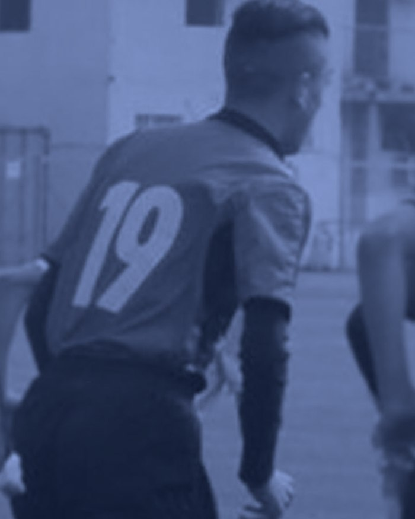
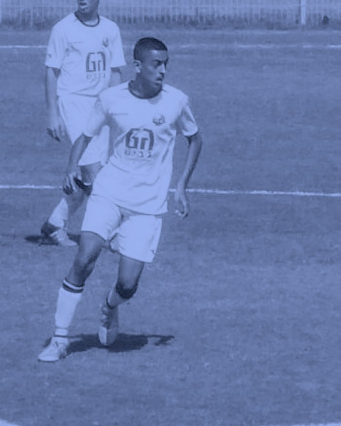

תספורת גבר
גוזר לפי מבנה הפנים וסוג השיער, ומסיים בתער כדי שהקווים יישארו נקיים.
תיק עבודות · BARBER
אני אלמוג אלון, ספר במספרת שניר ומאיר. כל תספורת אצלי מתחילה בהקשבה ונגמרת בפרטים הקטנים.
הסיפור שלי
הכדורגל היה החיים שלי מגיל צעיר. שם למדתי מה זה משמעת, מה זה דיוק, ומה זה לעבוד קשה בשביל משהו שאתה באמת רוצה.
בגיל 17 החלטתי לפרוש. זו לא הייתה החלטה פשוטה, אבל ידעתי שאני צריך למצוא את הדרך החדשה שלי.
חיפשתי מגרש חדש.
מצאתי אותו.


שנים של אימונים ותחרות. שם הבנתי שהבדל של סנטימטר הוא הבדל של הכול.
החלטתי לפרוש ולחפש כיוון אחר. לקחתי איתי בדיוק את מה שהמגרש לימד אותי.
התחלתי לספר מתוך תשוקה לאסתטיקה ולדיוק של כל שערה — ושם הבנתי שמצאתי את המגרש החדש שלי.
אני מספר במספרת שניר ומאיר, ומביא לכל תספורת את אותה מחויבות ואת אותו דיוק.

על הכיסא
אני אוהב את העבודה הזאת. את השקט של הבוקר לפני הלקוח הראשון, ואת הרגע שבו מישהו קם מהכיסא ומסתכל במראה קצת יותר זמן ממה שהתכוון. בשביל זה אני מגיע כל יום.
העבודות
רוצה כזאת? קבע תור באפליקציה של המספרה.
מה אני עושה
גוזר לפי מבנה הפנים וסוג השיער, ומסיים בתער כדי שהקווים יישארו נקיים.
מהעור עד הטקסטורה שלמעלה — בלי קווים, בלי קפיצות, בלי הפתעות.
קו חד, מעבר רך אל הלחי וגימור שנשאר מסודר גם אחרי שבוע.
בסבלנות ובאווירה נעימה, עם תוצאה שהם רוצים להסתכל עליה במראה.
קווים ודוגמאות בתער — מהעדין והמרומז ועד הבולט והחד.
מבהיר וצובע בליווי מלא, ומסביר בדיוק איך לשמור על זה בבית.
איך אני עובד
לפני שאני מתחיל אני שואל, מבין מה אתה רוצה, ואומר בכנות מה לדעתי יעבוד לך.
אני לא מסיים לפני שכל פרט קטן מסודר. זה לוקח עוד כמה דקות, וזה שווה אותן.
כלים מחוטאים, סביבה מסודרת ואפס לחץ. נכנסים בשקט ויוצאים מרוצים.
קביעת תור
מספרת שניר ומאיר
לקביעת תורים במספרה הטובה בארץ
קביעת התורים ניתנת רק באפליקציה
לאפליקציה שלנו
אין קביעת תורים בטלפון או בהודעות
מכיר מישהו שמחפש ספר? שלח לו את התיק.